Plugin do Obsidian para organizar estudos para concursos. Versão do plugin: 1.0.7 · Atualizado em 28/11/2026
Este manual foi feito para quem nunca usou o Obsidian nem o plugin. Comece pelo capítulo 1 e siga na ordem. As imagens mostram o plugin aberto no computador e no celular.
O Track do Oodeus é uma reconstrução do aplicativo Track Concursos dentro do Obsidian. Ele transforma o seu cofre de notas em um caderno de estudos interativo:
Tudo fica salvo dentro do seu cofre, no arquivo:
<seu cofre>/.obsidian/plugins/track-do-odeus/data.jsonOu seja: seus dados são seus, ficam no seu computador/celular, e não dependem de servidor.
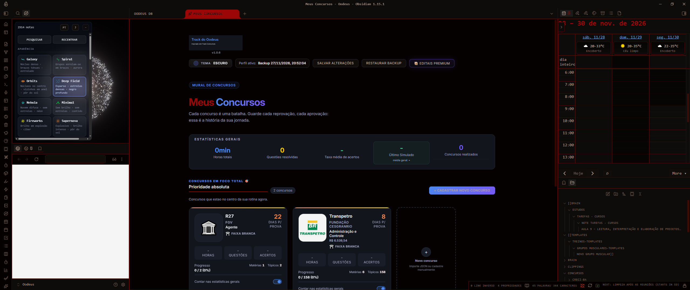
Figura 1 — A tela “Meus Concursos”, ponto de partida para criar e abrir concursos.Se você nunca usou o Obsidian, leia esta parte com calma. Ela explica o que o plugin chama de “nota”, “vault” e “wikilink”.
O Obsidian trabalha com uma pasta chamada cofre (do
inglês vault). Tudo que aparece no Obsidian são arquivos dessa
pasta — principalmente arquivos .md (Markdown), que são
notas de texto simples.
No seu caso, o cofre se chama Oodeus DB. Dentro dele
existe uma pasta oculta .obsidian, onde ficam as
configurações e os plugins — inclusive o Track do Oodeus.
Não apague a pasta
.obsidian. É onde o plugin e seus dados vivem.
Uma nota é um arquivo .md. Você cria
uma nota pelo botão ＋ no topo do Obsidian, ou clicando
em uma sugestão de link. Cada nota tem um título (o
nome do arquivo) e um conteúdo que você escreve livremente:
# Minha nota de estudo
Aqui eu escrevo o que quiser: resumo, fórmulas, dicas...No lado esquerdo do Obsidian existe o Explorador de arquivos (ícone de dois papéis). Lá você vê a árvore de pastas e notas do cofre.
[[ ]]Este é o recurso mais importante para entender as Anotações do plugin.
Quando você digita dois colchetes abertos
[[ dentro de uma nota, o Obsidian abre uma lista com as
notas existentes. Você continua digitando o nome, escolhe uma nota com a
seta/Enter e o Obsidian insere automaticamente:
[[Nome da nota]]Isso é um link interno: clicando nele, você abre aquela nota. Não precisa copiar caminho nem URL.
O plugin Track do Oodeus reproduz esse comportamento no campo Link do modal de material (capítulo 8).
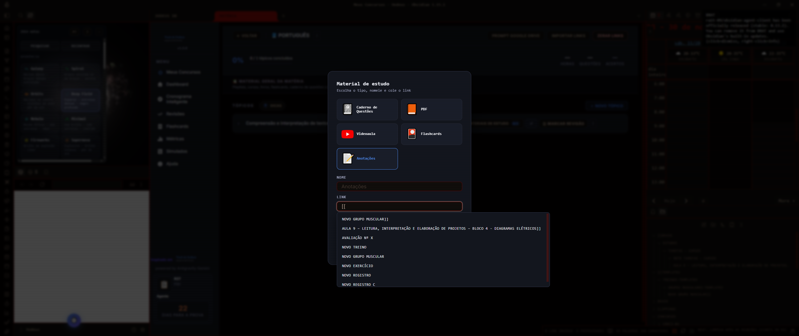
Figura 2 — Digitando[[ no campo Link, o plugin sugere notas do seu
cofre, exatamente como o Obsidian.
O tipo de material Anotações não guarda um link da internet: ele guarda o caminho de uma nota do seu cofre. Quando você clica em “Abrir” nesse material, o plugin abre a nota dentro do próprio Obsidian — não cria outra nota, não abre o navegador.
O BRAT é um plugin do Obsidian que instala e atualiza outros plugins direto do GitHub.
No Obsidian, abra Configurações → Plugins da comunidade.
Procure por BRAT, clique em Instalar e depois em Ativar.
Volte em Configurações → BRAT e clique em Add beta plugin.
No campo Repository, digite exatamente:
oodeus369-byte/track-do-oodeusClique em Select a version e escolha a release
mais recente (v1.0.5 ou superior).
Clique em ADD PLUGIN.
Em Plugins instalados, habilite Track do Oodeus.
O repositório é público, então não precisa de token do GitHub.
Para atualizar no futuro: abra o BRAT e clique em Update
plugins. Depois recarregue o Obsidian (Ctrl+R
ou feche e abra o app) para o novo main.js entrar em
memória.
Se não quiser usar o BRAT:
No GitHub, clique em Code → Download ZIP.
Extraia o ZIP.
Copie manifest.json e main.js para:
<seu cofre>/.obsidian/plugins/track-do-odeus/Habilite o plugin em Configurações → Plugins instalados.
Recarregue o Obsidian.
Desde a versão v1.0.3 os 92 assets (imagens, ícones, faixas) vão embutidos dentro do
main.js. Não é mais preciso copiar a pastaassets/.
Se você usa o mesmo cofre no PC e no celular com Syncthing:
sync-conflict sem comparar o
conteúdo;main.js
mais recente;track-do-odeus).O plugin aparece como um ícone na barra lateral esquerda do Obsidian (um foguete). Clique nele para abrir uma aba com o painel do Track.
Você também pode usar o comando Track do Oodeus: Abrir Track na paleta de comandos (Ctrl+P).
Ao abrir, a primeira tela é Meus Concursos. Se você ainda não tem nenhum concurso, clique em + Cadastrar Novo Concurso.
Dentro do painel do Track há uma barra lateral própria, com:
Para navegar, basta clicar no item desejado. O plugin troca de página sem sair do Obsidian.
No celular, essa barra vira um painel deslizante: use o botão ☰ no canto superior para abrir/fechar. Toque fora do painel para fechar.
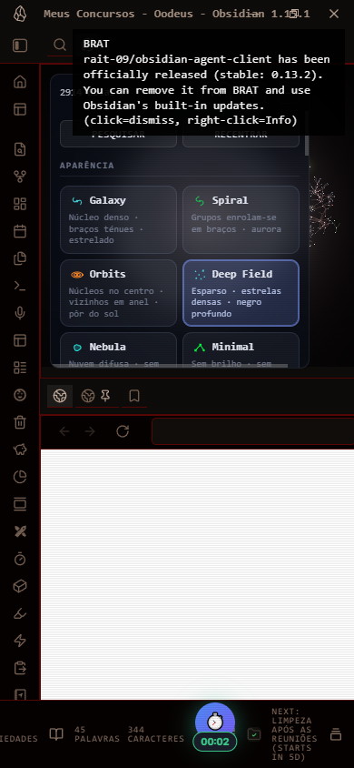
Figura 3 — No celular, o botão ☰ abre e fecha a barra lateral.A página Meus Concursos é o ponto de partida.
Clique no cartão do concurso. Ele passa a ser o concurso ativo — todas as páginas do plugin trabalham com ele. O nome e a contagem de dias aparecem na barra lateral.
No mural você vê estatísticas gerais (horas totais, questões resolvidas, taxa de acertos, simulados) e a seção Concursos em foco total, com o gráfico de prioridade.
Depois de criar o concurso, o próximo passo é cadastrar as matérias — feito na página de cadastro de edital.
Nesta página você importa ou monta a estrutura de matérias e tópicos do seu edital.
Dica: se você instalou um edital premium (capítulo 16), a estrutura já vem pronta — não é preciso digitar nada.
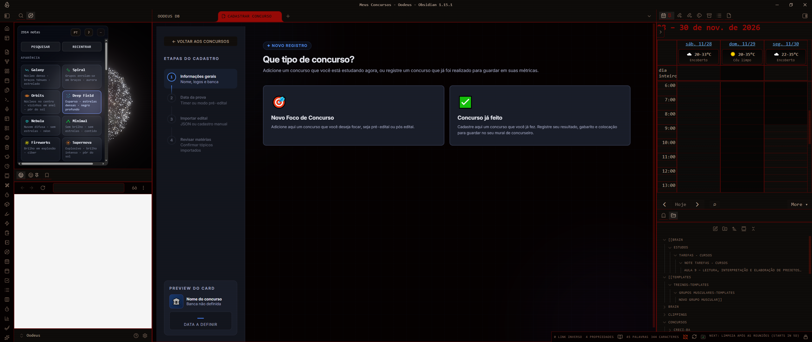
Figura 4 — Tela de cadastro/edição do edital.A página Matéria é onde você estuda de verdade.
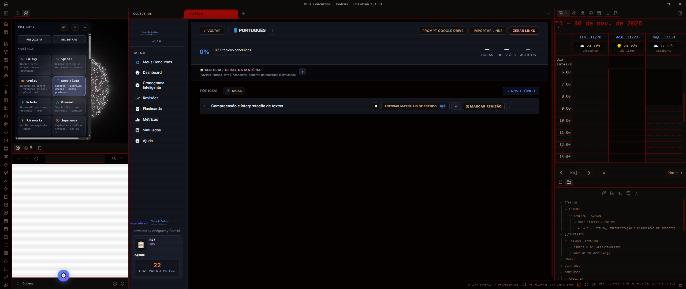
Figura 5 — Matéria “Língua Portuguesa” com um tópico e seus botões.Clique no nome de um tópico para expandir e ver os subtópicos e o conteúdo.
Na linha de cada item aparecem cinco controles:
| Botão | O que faz |
|---|---|
| ⏱️ (cronômetro) | Inicia um cronômetro livre já ligado àquela matéria/tópico. |
| ＋ (mais) | Abre o modal Material de estudo para adicionar links, PDFs, vídeos, anotações etc. |
| ✓ (check) | Marca o item como estudado e abre o popup para agendar revisão (5/7/15/30 dias ou data). |
| 🗓 MARCAR REVISÃO | Agenda uma revisão manual para aquele item, sem marcar como estudado. |
| ⋮ (opções) | Abre o menu com renomear, excluir e outras ações. |
No topo da página existe o cartão Material geral da matéria, com o botão ＋. Use-o para materiais que valem para a matéria inteira (playlists, livros, cadernos), em vez de um tópico específico.
No topo aparecem:
Eles são atualizados automaticamente quando você registra questões ou usa o cronômetro.
Ao clicar no ＋ de um tópico, abre-se o modal Material de estudo:
https://...);[[ para escolher
uma nota do seu cofre.Depois de adicionado, o material aparece na lista com os botões EDITAR, ABRIR, MARCAR ESTUDADO e EXCLUIR.
[[ no campo
Link[[.[[Nome da nota]].No popup de materiais, clique em ABRIR. O plugin localiza a nota no cofre e a abre no Obsidian. Se a nota não existir mais, aparece um aviso — ele não cria uma nota nova.
Se você não sabe o que é nota ou
[[ ]], volte ao capítulo 2.
Para PDFs, vídeos e outros arquivos, não use um caminho do
computador (C:\...) se você também usa o
celular/tablet: esse caminho só existe naquele aparelho. Use o botão
📎 Buscar arquivo do vault:
Materiais/aula.pdf.Esse caminho é o mesmo no computador, no celular e no
tablet, porque o cofre é sincronizado. Não aparece mais o aviso
“link bloqueado por segurança” e não é preciso ter
https://.
Se você colar um caminho absoluto do Android (ex.:
/storage/emulated/0/Download/aula.pdf), o plugin converte
para file:///storage/... automaticamente — mas o arquivo
pode não existir nos outros aparelhos. Por isso, prefira sempre
o botão do vault.
Regra importante para PDF e vídeo: se o arquivo
estiver dentro do cofre, o botão Abrir
usa o visualizador nativo de PDF do próprio Obsidian —
você não precisa instalar nenhum plugin de PDF (o
Obsidian já vem com ele). O PDF abre em uma aba do Obsidian, junto das
suas notas. Se o arquivo estiver fora do cofre (caminho
C:\..., /storage/... ou uma URL externa), o
plugin abre no aplicativo externo do dispositivo — e
esse caminho pode não funcionar em outros aparelhos. Para abrir sempre
dentro do Obsidian: coloque o PDF em uma pasta do cofre e
adicione pelo botão 📎 Buscar arquivo do vault.
O cronômetro é um botão flutuante (FAB) com ícone de relógio. Ele aparece quando você está em uma tela de estudo.
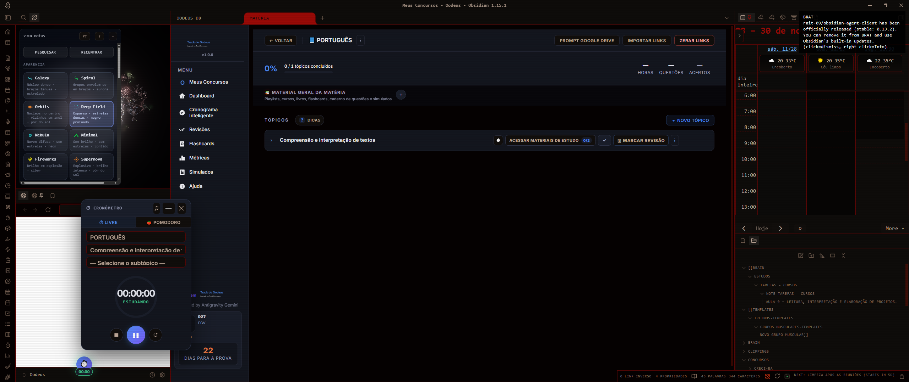
Figura 6 — Painel do cronômetro com os modos Livre e Pomodoro.Use os botões de play, pause/parar e reiniciar no painel.
Ao parar, o plugin abre um modal para salvar a sessão com matéria, tópico, questões feitas, acertos e observações. Depois de salvar, o tempo entra nas estatísticas e no cronograma.
Nesta página você monta automaticamente um plano de estudos.
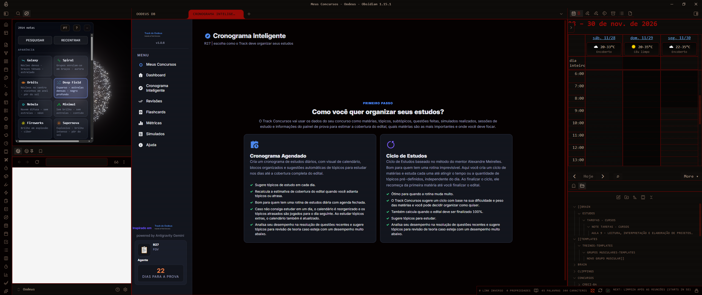
Figura 7 — Grade semanal do Cronograma Inteligente.Dica: o cronograma usa os dados que você registra nas sessões de estudo (capítulo 9). Quanto mais você registra, melhores são as sugestões.
Os flashcards funcionam como um caderno de perguntas e respostas com repetição espaçada (SRS): as cartas difíceis aparecem mais vezes; as fáceis, menos.
Figura 8 — Painel “Meus Baralhos” com estatísticas.
Você também pode criar flashcards a partir de um material do tipo Flashcards dentro de um tópico.
O Dashboard é a visão geral do concurso ativo:
As faixas vão de Branca → Amarela → Vermelha → Laranja → Verde → Roxa → Marrom → Preta. Cada faixa exige dias de estudo, questões e simulados com 80% de acerto. A regra é: qualquer métrica isolada que bata já avança de faixa — com bônus de cobertura e proteção contra regressão.
A Faixa Preta tem uma celebração especial.
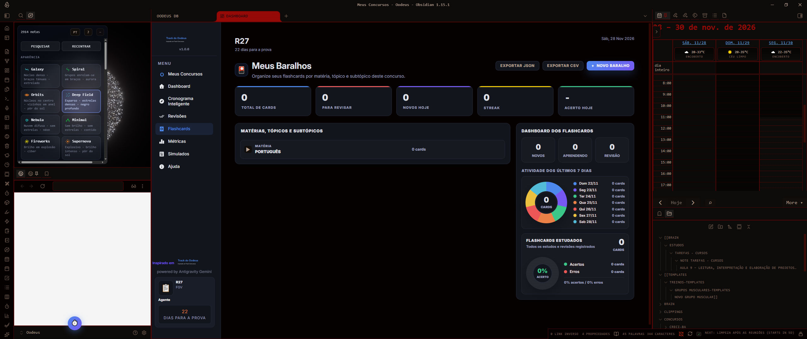
Figura 9 — Dashboard com as estatísticas e o cronograma da semana.A página Revisões organiza o que precisa ser revisitado.
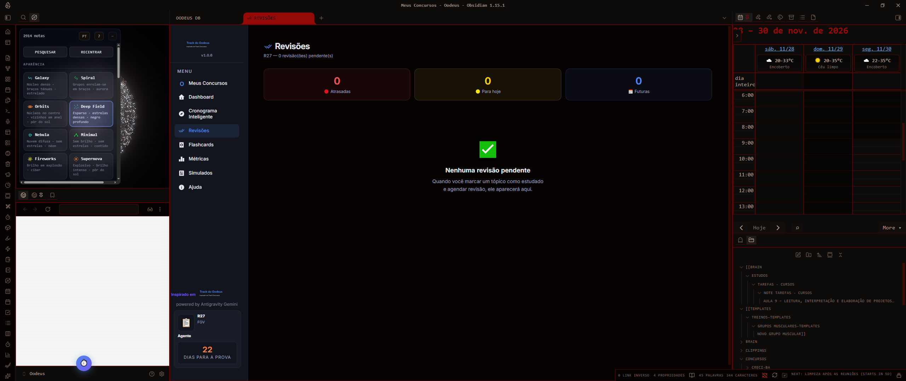
Figura 10 — Painel de revisões pendentes.A página Métricas (History) mostra os gráficos e o histórico de estudo:
O botão mostra “Gerando imagem…” e nunca trava a tela: se a cópia demorar, ele cai para download.
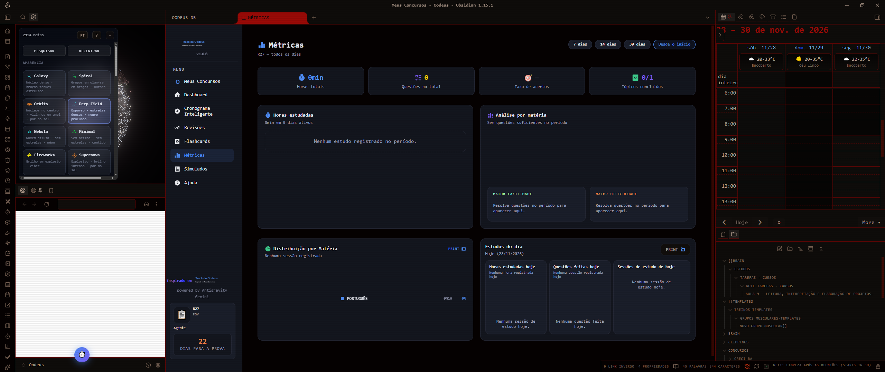
Figura 11 — Página de Métricas com heatmap e gráficos.Aqui você registra simulados realizados e acompanha a evolução.
O plugin calcula percentual, nota de corte e atualiza o gráfico de evolução. É possível editar e deletar simulados.
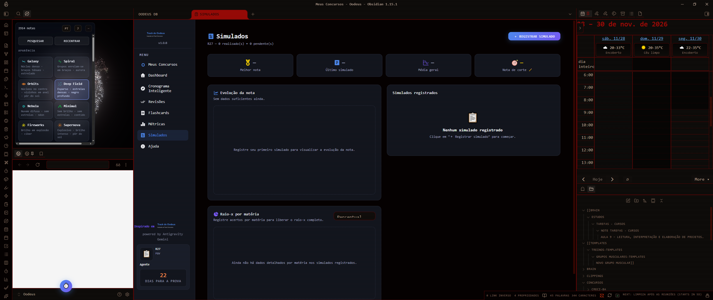
Figura 12 — Página de Simulados.Esta página mostra um catálogo de editais mantido pelo desenvolvedor original, fora do seu plugin.
O catálogo é baixado de:
https://raw.githubusercontent.com/michel-softwares/Editais-Premium/main/catalog.jsonO plugin baixa o arquivo do edital e o importa como um novo concurso no seu vault. Depois de instalado, o edital não depende mais da internet — os dados já estão no seu cofre.
Não é preciso atualizar o plugin para receber editais novos. Quando o desenvolvedor publica algo novo no catálogo, basta abrir a página ou clicar em Atualizar. Se estiver sem internet, o plugin mostra a última cópia salva em cache.
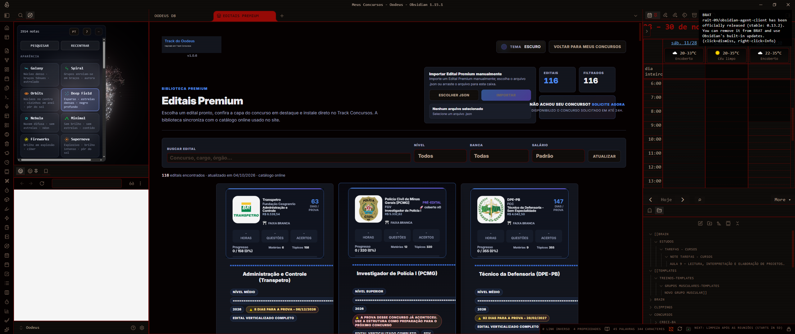
Figura 13 — Catálogo de Editais Premium.A página Ajuda traz links úteis, informações sobre o projeto e formas de apoiar. Use-a quando tiver dúvidas rápidas ou quiser conferir a versão instalada.
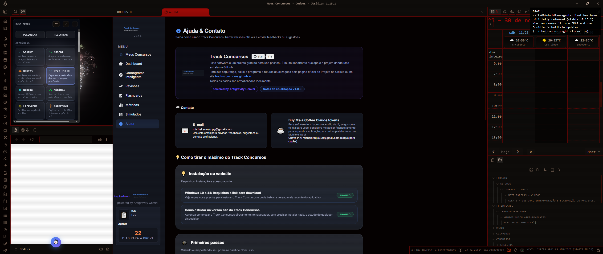
Figura 14 — Página de Ajuda.O plugin é mobile-friendly: funciona em retrato, paisagem, tablet e computador.
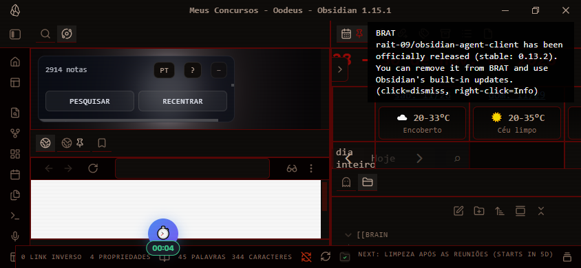
Figura 15 — Vista em paisagem no celular.Dica: no celular, use o menu ☰ para alternar rapidamente entre Concursos, Dashboard, Matéria e as demais páginas.
.obsidian/plugins/track-do-odeus/data.json (concursos,
matérias, tópicos, sessões, simulados etc.)..md
espalhados pelo cofre..obsidian/plugins/track-do-odeus/.O resgate automático fica em:
C:\Users\maest\Backups\track-resgate-2026-11-26\Lá estão o main.js, o data.json e os
projetos de código. O deploy.js foi corrigido para
nunca apagar o data.json — ele faz cópia
com timestamp antes de atualizar o plugin.
| Sintoma | O que fazer |
|---|---|
| Imagem de faixa/logo quebrada | Atualize para v1.0.3+; os assets estão embutidos. |
| Não aparece o botão ☰ no celular | Recarregue o Obsidian após atualizar. |
| Barra lateral não abre | Toque em ☰; para fechar, toque fora do painel. |
| Botões da matéria não respondem | Verifique se há um modal invisível: recarregue a página do plugin. |
| FAB não arrasta no celular | Atualize para v1.0.2+; use toque e arraste. |
| “Link bloqueado por segurança” | Use [[Nota]] para notas do vault e
https://... para links externos. |
| PDF abre em aplicativo externo | O PDF está fora do cofre. Coloque-o em uma pasta do Obsidian e adicione com 📎 Buscar arquivo do vault. O leitor de PDF do Obsidian é nativo. |
| Editais premium não carregam | Verifique a internet e clique em Atualizar; sem rede, aparece o cache. |
| Configurações do Obsidian parecem não abrir | Elas abrem em uma janela separada; use Alt+Tab para trazer “Configurações - Oodeus” para frente. |
| Conflito no Syncthing | Não apague na dúvida: compare os arquivos e mantenha o
main.js mais recente. |
Depois de qualquer atualização: Ctrl+R no Obsidian
(ou feche e reabra o app). Isso garante que o novo main.js
seja carregado.
| Termo | Significado simples |
|---|---|
| Vault / cofre | A pasta onde o Obsidian guarda suas notas. |
| Nota | Um arquivo .md que você escreve no Obsidian. |
Wikilink [[ ]] |
Link interno para outra nota; digitando [[ o Obsidian
sugere notas. |
| Plugin | Um complemento que adiciona funções ao Obsidian. |
| Concurso ativo | O concurso que o plugin está usando no momento. |
| Matéria | Matéria de estudo dentro do concurso. |
| Tópico / subtópico | Divisões da matéria. |
| Faixa | Nível de progresso (Branca a Preta). |
| SRS | Repetição espaçada: sistema dos flashcards. |
| Pomodoro | Técnica de foco com blocos de 25 min e pausas. |
| RAW / storage | Dados brutos salvos pelo plugin em data.json. |
| BRAT | Plugin que instala/atualiza plugins do GitHub. |
Fim do manual.
Track do Oodeus — versão 1.0.7 · “Inspirado em Track Concursos”.
Repositório: oodeus369-byte/track-do-oodeus.